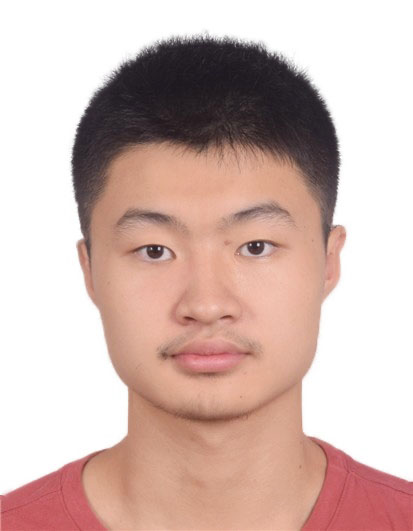

Look at the Neighbor: Distortion-aware Unsupervised Domain Adaptation for Panoramic Semantic Segmentation
-

Xu Zheng
AI Thrust, HKUST(GZ)
-

Yunhao Luo
Brown University
-
Chong Fu
Northeastern University
-
Kangcheng Liu
SMMG/ROAS Thrust, HKUST(GZ) -

Addison Lin Wang
AI Thrust, HKUST(GZ)
Dept. of CSE, HKUST

Abstract
The popular methods for semi-supervised semantic segmentation mostly adopt a unitary network model using convolutional neural networks (CNNs) and enforce consistency of the model’s predictions over perturbations applied to the inputs or model. However, such a learning paradigm suffers from two critical limitations: a) learning the discriminative features for the unlabeled data; b) learning both global and local information from the whole image. In this paper, we propose a novel Semi-supervised Learning (SSL) approach, called Transformer-CNN Cohort (\textbf{TCC}), that consists of two students with one based on the vision transformer (ViT) and the other based on the CNN. Our method subtly incorporates the multi-level consistency regularization on the predictions and the heterogeneous feature spaces via pseudo-labeling for the unlabeled data. First, as the inputs of the ViT student are image patches, the feature maps extracted encode crucial class-wise statistics. To this end, we propose class-aware feature consistency distillation (\textbf{CFCD}) that first leverages the outputs of each student as the pseudo labels and generates class-aware feature (CF) maps for knowledge transfer between the two students. Second, as the ViT student has more uniform representations for all layers, we propose consistency-aware cross distillation (\textbf{CCD}) to transfer knowledge between the pixel-wise predictions from the cohort. We validate the TCC framework on Cityscapes and Pascal VOC 2012 datasets, which outperforms existing SSL methods by a large margin.
Experimental Results

BibTeX
@article{zheng2022transformer,
title={Transformer-cnn cohort: Semi-supervised semantic segmentation by the best of both students},
author={Zheng, Xu and Luo, Yunhao and Wang, Hao and Fu, Chong and Wang, Lin},
journal={arXiv preprint arXiv:2209.02178},
year={2022}
}